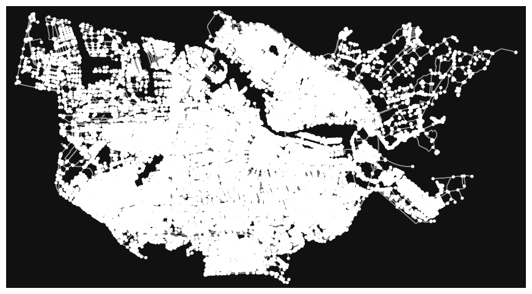
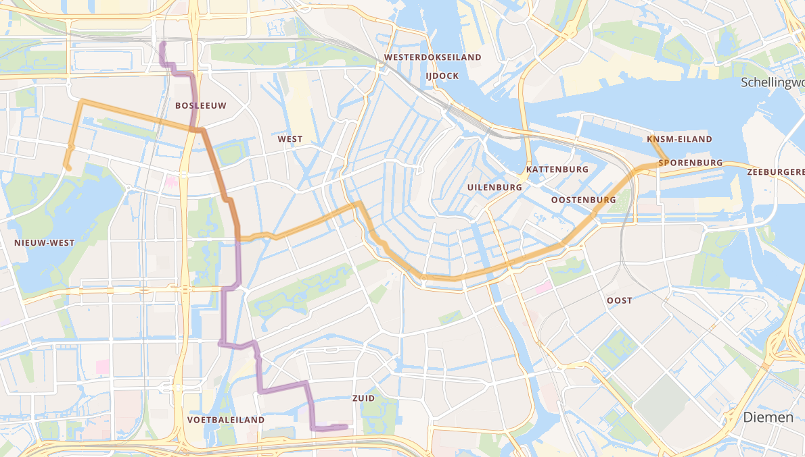
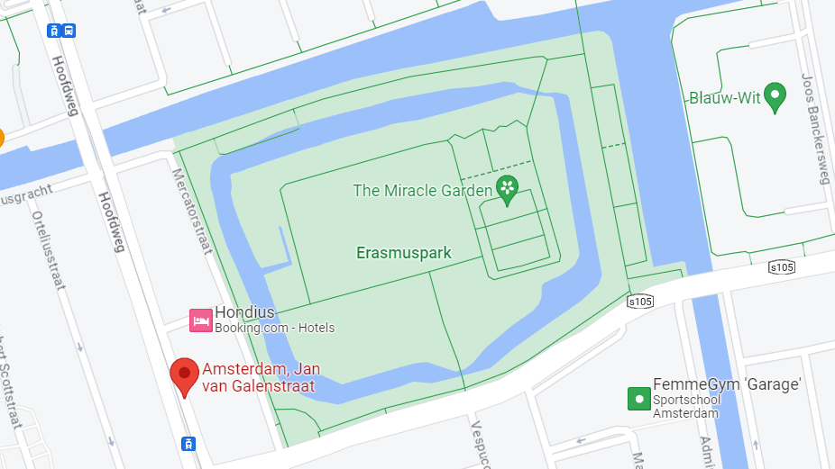
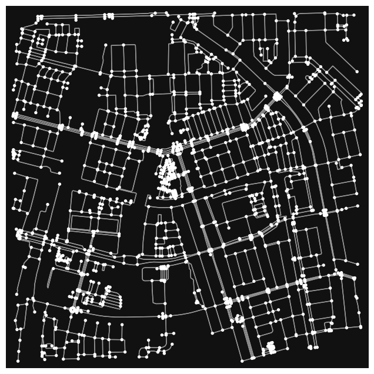
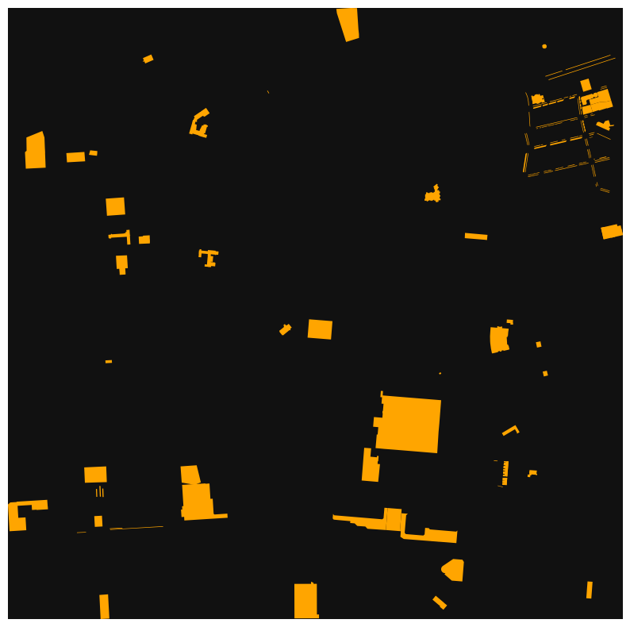

MADE - DATA1 - Julika, Pip & Robin (group 6).
import osmnx as ox
import networkx as nxplace_name = "Amsterdam, The Netherlands"
graph = ox.graph_from_place(place_name)
ox.plot_graph(graph, figsize=(12,6))
(<Figure size 1200x600 with 1 Axes>, <Axes: >)location_1 = ox.geocode("Lanseloetstraat 1, Amsterdam, Netherlands")
print(location_1)(52.3771807, 4.8495429)
location_2 = ox.geocode("Joos Banckersplantsoen 7, Amsterdam, Netherlands")
print(location_2)(52.3747473, 4.8560339)
location_3 = ox.geocode("Joos Banckersplantsoen 55, Amsterdam, Netherlands")nodes = ox.distance.nearest_nodes(graph, location_1[1], location_1[0])
nodes_2 = ox.distance.nearest_nodes(graph, location_2[1], location_2[0])
nodes_3 = ox.distance.nearest_nodes(graph, location_3[1], location_3[0])
print(nodes, nodes_2, nodes_3)46411953 8986414574 940042042
node_ids = [46411953,8986414574, 940042042]
lats = []
lons = []
for node_id in node_ids:
node = graph.nodes[node_id]
lats.append(node['y'])
lons.append(node['x'])
center_lat = sum(lats) / len(lats)
center_lon = sum(lons) / len(lons)
print("Center Latitide:", center_lat)
print("Center Longitude:", center_lon)Center Latitide: 52.37600033333333
Center Longitude: 4.853919233333333
nodes_zwemlocatie = ox.distance.nearest_nodes(graph, 4.853919233333333, 52.37600033333333)
print(nodes_zwemlocatie)8986457316
 Here is the point on the map and would suit the most as the small Event Headquarters
import osmnx as ox
import geopandas as gpd
from shapely.geometry import Point
# Specify the coordinates (latitude and longitude) of the node you're interested in
node_coordinates = (52.3755052, 4.8540567999999995) # Replace with actual coordinates
# Define a buffer distance (in meters) to search for nearby bus stops
buffer_distance = 10000 # Adjust as needed
# Download the OSM data for the area around the specified node
graph = ox.graph_from_point(node_coordinates, dist=buffer_distance, network_type="all")
# Create a Shapely Point object for the node coordinates
node_point = Point(node_coordinates)
# Create a GeoDataFrame with the graph nodes
nodes_gdf = ox.graph_to_gdfs(graph, edges=False)
print (nodes_gdf['highway'])
print (nodes_gdf.loc[nodes_gdf['highway'] == 'bus_stop', 'geometry'].distance(node_point))
# Find the nearest bus stop to the specified node
nearest_bus_stop = nodes_gdf.loc[nodes_gdf['highway'] == 'bus_stop', 'geometry'].distance(node_point).idxmin()
# Get the information about the nearest bus stop
bus_stop_info = nodes_gdf.loc[nearest_bus_stop]
# Print the information about the nearest bus stop
print("Nearest Bus Stop:")
print(bus_stop_info)osmid
6316199 NaN
25596455 NaN
25596477 NaN
25645989 NaN
25645990 NaN
...
11266189784 NaN
11266401143 NaN
11266401149 NaN
11266423348 NaN
11266423349 NaN
Name: highway, Length: 104669, dtype: object
osmid
311831619 67.218193
418753015 67.167236
473695275 67.122881
700180443 67.298784
700180622 67.302315
700343203 67.213897
702260323 67.178649
702260732 67.173111
702261273 67.172548
1079768939 67.155276
1711878364 67.233066
1734132991 67.101221
2001416179 67.117185
2602194832 67.091448
2985818688 67.150372
3319645719 67.112000
3321854273 67.052596
3321854286 67.056693
3349684197 67.144866
3349684198 67.144664
4105376389 67.172474
4623269508 67.158311
4623269510 67.161959
4623486147 67.158125
4623486148 67.158271
4623486304 67.150374
4623486305 67.154771
5715909551 67.137823
5715909553 67.138320
7228398249 67.205206
dtype: float64
Nearest Bus Stop:
y 52.294334
x 4.989107
street_count 1
highway bus_stop
ref NaN
geometry POINT (4.9891074 52.2943344)
Name: 3321854273, dtype: object
C:\Users\julik\AppData\Local\Temp\ipykernel_34292\3761106465.py:22: UserWarning: Geometry is in a geographic CRS. Results from 'distance' are likely incorrect. Use 'GeoSeries.to_crs()' to re-project geometries to a projected CRS before this operation.
print (nodes_gdf.loc[nodes_gdf['highway'] == 'bus_stop', 'geometry'].distance(node_point))
C:\Users\julik\AppData\Local\Temp\ipykernel_34292\3761106465.py:24: UserWarning: Geometry is in a geographic CRS. Results from 'distance' are likely incorrect. Use 'GeoSeries.to_crs()' to re-project geometries to a projected CRS before this operation.
nearest_bus_stop = nodes_gdf.loc[nodes_gdf['highway'] == 'bus_stop', 'geometry'].distance(node_point).idxmin()

As there is no data for the nearest busstop (NaN), we decided to get the nearest busstop: Jan van Galenstraat. For Tram 7 there are 6 stops every hour and for Bus 15 there will stop a bus 4 times an hour.
bus_capacity = 45+105
bus_frequency = 4
tram_capacity = 50+125
tram_frequency = 6
total_capacity = (bus_capacity * bus_frequency) + (tram_capacity*bus_frequency)
print(total_capacity,"passengers every hour")1300 passengers every hour
The orange line is Tram 7
The purple line is Bus 15
Tram 7: The node of the start location is 5737120694, the end location is 6072947033.
Bus 15: The node of the start location is 2314277260, the end location is 9963390155
tram_start = ox.geocode("Azartplein 65, Amsterdam, Netherlands")
tram_end = ox.geocode("Sloterpark, Amsterdam, Netherlands")
bus_start = ox.geocode("Station Sloterdijk, Amsterdam, Netherlands")
bus_end = ox.geocode("Zuidplein 10, Amsterdam, Netherlands")
print(tram_start)
print(tram_end)
print(bus_start)
print(bus_end)(52.3776147, 4.936303)
(52.36503595, 4.812127156019273)
(52.3890161, 4.838877)
(52.3389984, 4.8736856)
nodes = ox.distance.nearest_nodes(graph, tram_start[1], tram_start[0])
nodes_2 = ox.distance.nearest_nodes(graph, tram_end[1], tram_end[0])
nodes_3 = ox.distance.nearest_nodes(graph, bus_start[1], bus_start[0])
nodes_4 = ox.distance.nearest_nodes(graph, bus_end[1], bus_end[0])
print(nodes, nodes_2, nodes_3, nodes_4)5737120694 6072947033 2314277260 9963390155
graph = ox.graph_from_place(place_name)
node_ids = [5737120694, 6072947033]
lats = []
lons = []
for node_id in node_ids:
node = graph.nodes[node_id]
lats.append(node['y'])
lons.append(node['x'])
center_lat = sum(lats) / len(lats)
center_lon = sum(lons) / len(lons)
print("Center Latitide Tram 7:", center_lat)
print("Center Longitude Tram 7:", center_lon)Center Latitide Tram 7: 52.3710068
Center Longitude Tram 7: 4.874617450000001
graph = ox.graph_from_place(place_name)
node_ids = [2314277260, 9963390155]
lats = []
lons = []
for node_id in node_ids:
node = graph.nodes[node_id]
lats.append(node['y'])
lons.append(node['x'])
center_lat = sum(lats) / len(lats)
center_lon = sum(lons) / len(lons)
print("Center Latitide Bus 15:", center_lat)
print("Center Longitude Bus 15:", center_lon)Center Latitide Bus 15: 52.36404365
Center Longitude Bus 15: 4.856406
The bus line is more in the center than the tram line. because the tram line route is much longer.
For the amenities near the finish-line: We assume that the avarage person can walk 1 km (1000 meters) within 10 minutes
zwemlocatie = ox.graph_from_address('Erasmuspark, Amsterdam, Netherlands', dist=1000, network_type="walk")
ox.plot_graph(zwemlocatie)
zwemlocatie.nodes[8986457316]
{'y': 52.3759955, 'x': 4.854096, 'street_count': 3}fig, ax = ox.plot_graph(zwemlocatie, filepath='image.svg', save=True, show=False, close=True)
place = "Erasmus, Amsterdam, Netherlands"
tags = {"amenity": True}
gdf = ox.features_from_address(place, tags, dist=1000)
gdf.shape
fig, ax = ox.plot_footprints(gdf, figsize=(10, 10))